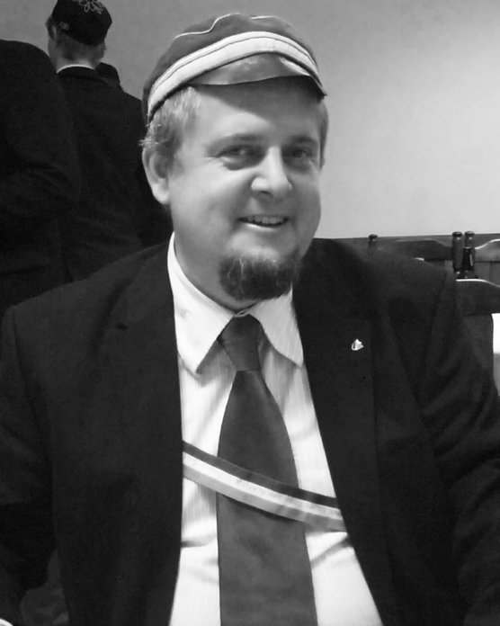

Aktualności
Wykład otwarty pt.: "Model standardowy" z prof. K. Meissnerem 21 lis 2019

{kind=link}
W ostatni czwartek wraz z SKN Filozofii Nauki UW organizowaliśmy wykład otwarty poświęco ny Modelowi Standardowemu na Wydziale Fizyki Uniwersytetu Warszawskiego przy ul. Pasteura. Naszym gościem był wybitny fizyk i popularyzator nauki, prof. Krzysztof Meissner. Warto wspomnieć, że jego pradziad, Wincenty Lutosławski, uważał się za duchowego ojca Welecji.
Poznaliśmy założenia Modelu, który, jak się okazało, nie powinien już być modelem, rozwiązania, które przynosi oraz jego ograniczenia i zjawiska, których nie jest w stanie wyjasnić, jak choćby dysproporcję pomiędzy materią i antymaterią.
Imponujące audytorium zebrane w sali z zaciekawieniem wysłuchało pełnego pasji prelegenta.
Śp. fil. dr Arkadiusz Peisert 16 lis 2019
Korporacja Akademicka Welecja z wielkim smutkiem informuje, że w dniu 13 listopada 2019 roku zmarł nagle nasz drogi przyjaciel i wieloletni aktywny członek naszego stowarzyszenia fil. dr Arkadiusz Peisert. Zawsze mogliśmy na Niego liczyć. Jest to strata, z którą nigdy nie będziemy mogli się pogodzić. Prezes Welecji ogłasza zwyczajową żałobę.
Braciom, co po życia znoju,
Spoczywają już w spokoju,
Pod mogilnym żwirem ziemi,
Wieczny spokój, wieczna cześć!
Wystawa "Korporantów Wojenne Drogi" 15 lis 2019

{kind=link}
{kind=link}
{kind=link}
14. listopada o 13.30 w Muzeum Politechniki Warszawskiej otwarto wystawę "Korporantów Wojenne Drogi", organizowaną przez Stowarzyszenie Filistrów Polskich Korporacji Akademickich, poświęconą walce o Polskę i dla Polski członków polskich korporacji akademickich w XIX. i XX. wieku. Nie mogło tam zabraknąć pamiątek po naszych filistrach, którzy z oddaniem służyli sprawie, niejednokrotnie płacąc najwyższą cenę. Na uroczystości przemówienie wygłosił wicepremier i minister kultury Piotr Gliński oraz odznaczył Krzyżami Zasługi zasłużonych członków ruchu korporacyjnego.
Wystawę można odwiedzić do końca lutego 2020 roku.
Wykład poświęcony historii rodziny Jasińskich 14 lis 2019
{kind=link}
Dzisiaj spotkaliśmy się z panią Maryną Rubach, bratanicą naszego filistra, Ziemowita Jasińskiego, w czasie którego opowiadała nam historie rodzinne. W prawdziwie rodzinnej atmosferze słuchaliśmy wielu anegdot i opowieści - smutnych, podniosłych, jak i ciepłych i zabawnych - ale i my mogliśmy podzielić się faktami z życia filistra, jak choćby na temat słynnej wyprawy do Rygi w latach 90. Nasz gość przyniósł wiele pamiątek, w tym portret Ziemowita Jasińskiego namalowany przez współwięźnia z oflagu.